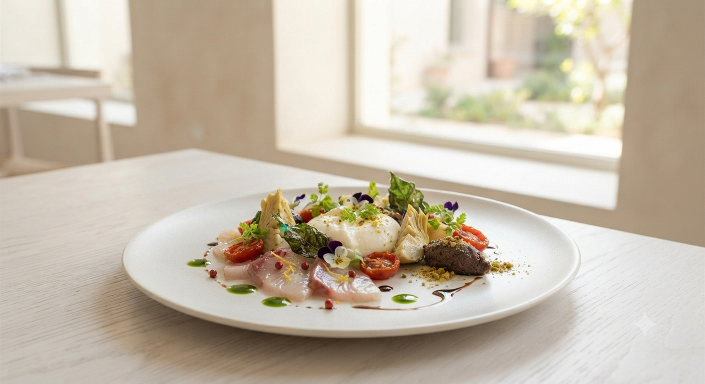
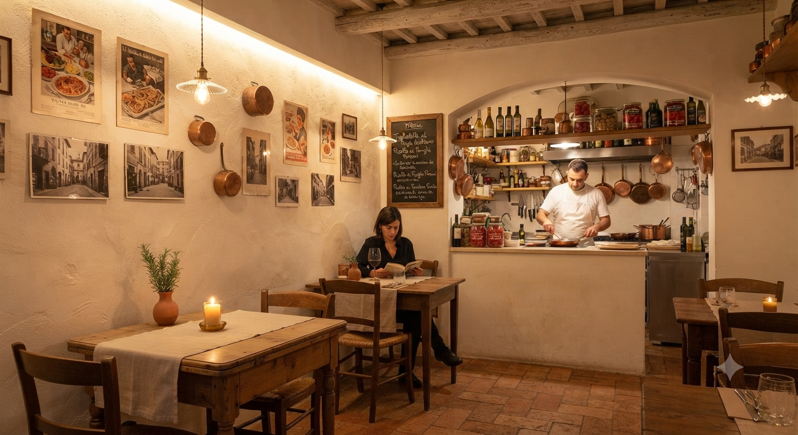
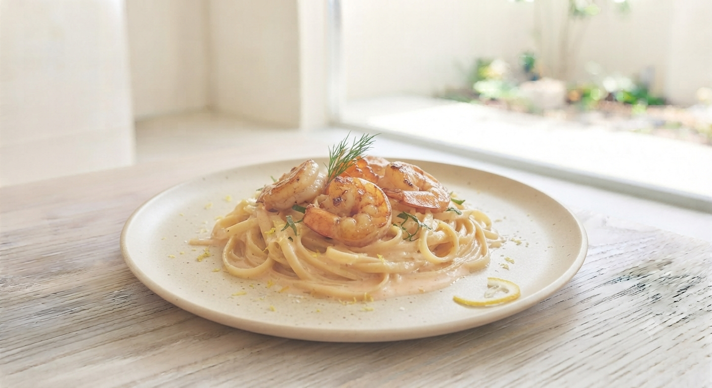
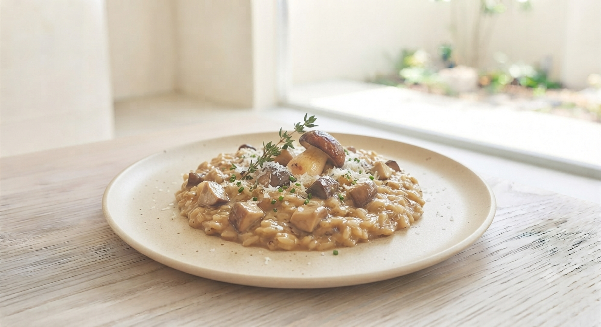

EST. SAPPORO 2024 / ISSUE NO.01

Saffron Risotto
THE ICONIC SIGNATURE DISH
Web Limited
自家製
フォカッチャ
プレゼント
サッポロファクトリー向かい。カジュアルな外観を裏切るような、上質で温かいサービス。ここは、日常の中に「非日常」を添える場所。
爽やかなシェフが紡ぐ本格料理と、ソムリエのマダムが提案するワインのペアリング。その調和は、まるでお気に入りの短編小説を読み終えた時のような充足感をもたらします。

Interior / Warm Yellow Walls

Main Course / Hokkaido Venison

クチコミで絶賛されるサフランのリゾット。鮮やかな黄色は、北海道の豊かな大地を象徴するかのよう。コックリと濃厚でありながら、後味はどこまでも洗練されています。
「永久に続くランチとディナーを全制覇したい」
— 平日昼間、本格イタリアンを求めて
「ハードルを大幅に超える美味しさ！人生最高のリゾットとなりました。」
評判が良かったのでハードルを上げて来ましたが、それを軽々と超えていきました。スープ、パン、トマト、チーズ…全てが最高。リピート確定です。
「鹿肉は牛肉よりさっぱり。お腹に優しい味」
— Dinnerコースを堪能
これから始まる、新しいおもてなしと体験。
ソムリエとシェフが厳選する「今月の一皿×おすすめワイン」のペアリング理由やご自宅での楽しみ方を、Instagramやショート動画で毎週特別発信予定。
シェフ手作りの濃厚ラグーソースや旬の北海道素材を使った自家製パスタキット。ご自宅でも「イル ニード」の味を楽しめるオンラインショップを準備中。
Locate us / Odori East 4-chome
週末ランチは早めのご予約をお勧めします